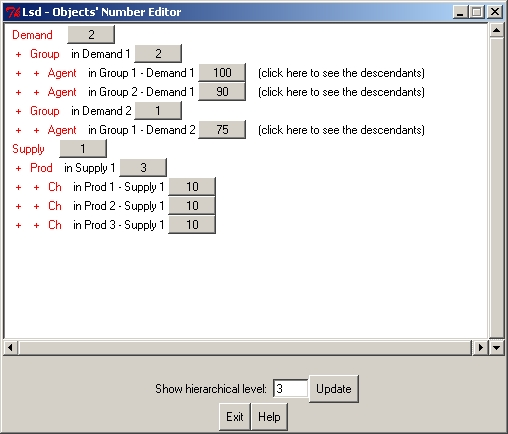
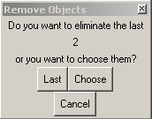
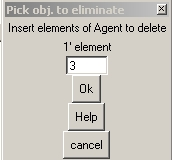
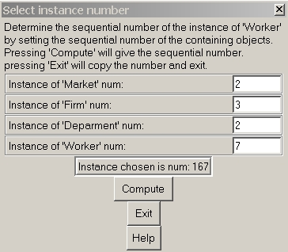

Menu "Data" All Object Num.
Lsd represents a model as a hierarchical structure of Objects. With
this routine users can set the number of Objects in each position of
the
model.
The window shows the number of instances for all Object types in the
model, and allow to change their number.
The window is organized in lines, where each line corresponds to a
group of Objects of the same type descending from the same instance.
The
lowest part of the window contains, besides the button to return to the
main Browser (activated also by the key Escape),
an entry to set the maximum hierarchical level of the model shown.

Modifying the Number
of Objetcs
The user can click on any of the numbers indicating a group of Objects
to modify it. Depending on the position in the hierarchy of the group
of
Objects it is possible to choose to modify the sets of groups of the
objects
within one "branch" of the hierarchy. For example clicking on the
number
90 indicating the number of Objects "Agent" contained in the second
Object
Group, in turn contained in the first Object Demand, one obtains the
following
window:
If the new number of Objects is lower than before the system has
to remove some copies of the Objects. If the user chose one option that
affected a whole branch of the model than the system automatically
remove
the last copies in each affected group. Instead, if the user chose the
first option, to affect only one group, then the system allow the user
to either remove the last instances or to pick individually each copy
to
remove.
Choose Individual Copies to Remove
If the user reduces the number of Objects in only one group (that is,
does not affect a whole branch of the model), then the user has the
option
to remove all excess Objects, or choose the ones to remove
individually.

This window indicates the number of instances to remove. In the
example,
the user indicated 73 Agent, and, since there were 75, it is necessary
to remove 2 copies. Choosing Last the system will automatically
remove all the necessary copies from the last part of the affected
group.
Instead, choosing Choose, the system allows the individual
selection
of the copies to remove. In this latter case, a selection window allows
to insert the series of the Objects to remove.

In this window the user needs to type in and press Return (or click
on Ok), for each element to remove. In the example, the first element
to
remove is the third. Pressing Return the same window will request the
next
and last element to remove. Notice that it is possible to indicate only
increasing elements to remove. In the example, after having indicated 3
for the first remove, the user can indicate only a number from 4 to 75.
Important
When new Objects are inserted in a model they may include initial
values
relevant to start the simulation (lagged Variables or Parameters). For
newly inserted Objects these values are copied by default as defined in
the very initial instance of the Object. But Lsd does not allow a
simulation
to be started unless these values are explicitly set by the user.
Therefore,
after a session where new Object instances are added to the model it is
necessary to edit the Object to set their initial values (see Initial
Values in menu Data). Users can access
to the window for initializing values by just clicking on their label.
Menu Data - Set current type of Object
This option allows to set the number of instances for an Object type
without being forced to represent the whole tree of the model. Here you
set quickly the number of instances of the Object currently pointed by
the Browser to a chosen value. If there are more than one groups of
this
Object type (that is, there are many instances of its ancestor), all
the
groups will be changed so that they will have all the same number of
instances
as specified. If the new value is larger than the existing number of
instances,
the new instances will be appended in the end of the previous set of
instances.
If the new value is lower than the previous number of instances, the
last
ones will be eliminated. To edit the number of instances
differentiating
for each groups of descendants, or to choose the particular instances
to
delete, it is necessary to use the entry "All Object Num."
in menu Data.

In some cases it is necessary to specify an exact instance, or copy,
of an object. Lsd requires the sequential number of the instance among
all the ones present in the model, but in general users find easier to
indicate them in respect of the position in the hierarchy of Objects.
For example, the window above indicates that the 7th object "Worker"
contained in the 2nd object "Department" contained in the 3rd "Firm" in
the second "Market" is the 167th.
Users can set the values in all the cells referring to the objects.
Pressing Compute will compute
the number of instance requested. Pressing Exit will close this window
returning to the calling interface. The computed number will be pasted
in the cell where the instance number is requested.